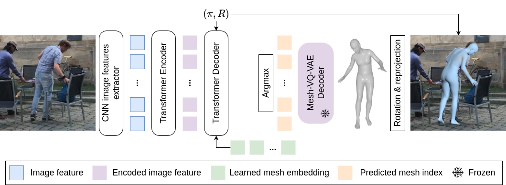

|
| |
Previous works on Human Pose and Shape Estimation (HPSE) from RGB images can be broadly categorized into two main groups: parametric and non-parametric approaches. Parametric techniques leverage a low-dimensional statistical body model for realistic results, whereas recent non-parametric methods achieve higher precision by directly regressing the 3D coordinates of the human body mesh. This work introduces a novel paradigm to address the HPSE problem, involving a low-dimensional discrete latent representation of the human mesh and framing HPSE as a classification task. Instead of predicting body model parameters or 3D vertex coordinates, we focus on predicting the proposed discrete latent representation, which can be decoded into a registered human mesh. This innovative paradigm offers two key advantages. Firstly, predicting a low-dimensional discrete representation confines our predictions to the space of anthropomorphic poses and shapes even when little training data is available. Secondly, by framing the problem as a classification task, we can harness the discriminative power inherent in neural networks. The proposed model, VQ-HPS, predicts the discrete latent representation of the mesh. The experimental results demonstrate that VQ-HPS outperforms the current state-of-the-art non-parametric approaches while yielding results as realistic as those produced by parametric methods when trained with few data. VQ-HPS also shows promising results when training on large-scale datasets, highlighting the significant potential of the classification approach for HPSE.
|  |
This work introduces a method significantly different from all prior human pose and shape estimation (HPSE) approaches. Instead of predicting the parameters of a human body model or 3D coordinates, we learn to predict a learned discrete latent representation of 3D meshes, transforming the HPSE into a classification problem.
For learning our discrete latent representation of meshes, we build on the vector quantized-variational autoencoder (VQVAE) framework and adapt it to the fully convolutional mesh autoencoder. The encoder of the proposed model, called Mesh-VQ-VAE, provides a low-dimensional discrete latent representation preserving the spatial structure of the mesh.
We then propose a Transformer-based encoder-decoder model, called VQ-HPS, for predicting the human mesh discrete representation of the introduced Mesh-VQ-VAE from image features. To ease the low-dimensional representation learning of the mesh, the predicted mesh is non-oriented and centered on the origin: we call it a canonical mesh. To obtain the final oriented mesh, we then need to predict the rotation , and for better alignment with the image, we also regress the weak-perspective camera.
 |
Following the standard practice, we train VQ-HPS on Human3.6M, MPI-INF-3DHP, COCO, and MPII. Qualitative results on the 3DPW dataset are available below. For video results, the frames are processed indepently but we apply a linear moving average with a window of size 10 on vertices to smooth the results.
 |
@inproceedings{fiche2024vq,
title={{VQ-HPS}: Human Pose and Shape Estimation in a Vector-Quantized Latent Space},
author={Fiche, Gu{\'e}nol{\'e} and Leglaive, Simon and Alameda-Pineda, Xavier and Agudo, Antonio and Moreno-Noguer, Francesc},
booktitle={European Conference on Computer Vision ({ECCV})},
year={2024}
}